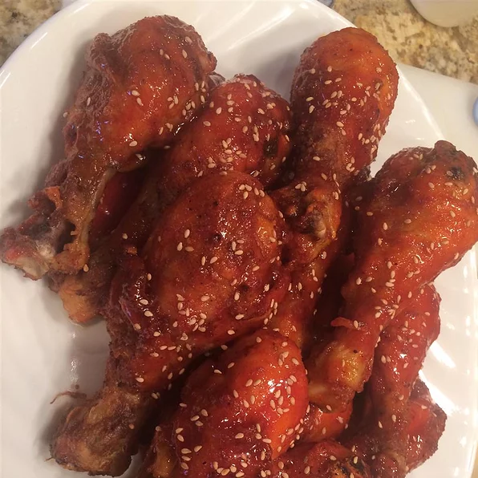

Crispy Honey Sriracha Chicken Wings

I hear you clucking Big Chicken
A honey-sriracha glaze is never one to be outdone, yet in this recipe it takes second-stage.
The real star of the show is the baking powder-laced spice rub that the wings are coated in prior to baking.
A better living through chemistry allows the surface of the chicken to become dry and crispy comparable to
wings pulled from a deep fryer.
Ingredients
- 2 tablespoons baking powder
- 1 tablesppon kosher salt
- 1 teaspoon freshly ground black pepper
- 1 teaspoon smoked paprika
- 2 1/2 pounds chicken wing sections
Honey Sriracha Glaze:
- 1/3 cup honey
- 1/3 cup sriracha sauce
- 1 tablespoon seasoned rice vinegar
- 1/4 teaspoon sesame oil
- 1 pinch sesame seeds, or as desired
Directions
- Preheat oven to 425 degrees F (220 degrees C). Line a baking sheet with aluminum foil and place an oven-proof wire rack over the foil.
- Whisk baking powder, salt, black pepper, and paprika together in a small bowl. Place chicken wings in a large bowl. Sprinkle 1/2 of the baking powder mixture over wings and toss to coat.
Sprinkle remaining baking powder mixture over wings and toss to coat again. Place wings onto the rack of the prepared baking sheet.
- Bake in the preheated oven for 20 minutes. Turn wings and continue baking for 20 minutes. Turn wings again and bake until wings are browned and crispy, about 15 minutes more. Transfer wings to a large bowl.
- Whisk honey, sriracha sauce, rice vinegar, and sesame oil together in a bowl until glaze is smooth. Drizzle glaze over wings and toss to coat completely. Transfer wings to a serving platter and sprinkle sesame seeds over the top.